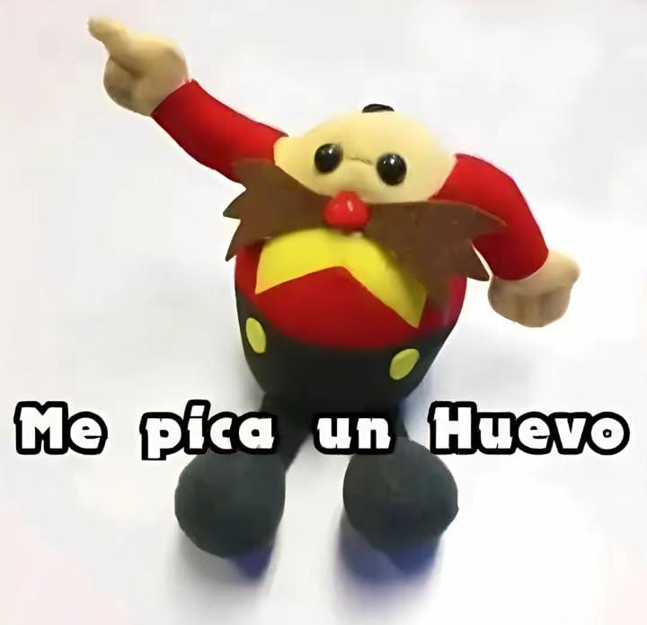

Historial de actualizaciones | Powered by Jery
NUEVOS COMANDOS:
!perfil | !perfilgif
!diploma
!sebusca
!cv
!noticia
!entrevista
!quiz
⚙️ BUG FIXES & MEJORAS:
!versus.!meme.!versus.!chiste en tiempo real, volviendo su humor más sarcástico y garantizando que ya no repetirá los mismos chistes.⚔️ Sistema de Peleas: Demuestra quién domina el servidor y gana prestigio.
!versus @usuario o /versus
!ranking o /ranking.!chat, Rodolfo ahora reconoce los nombres de los usuarios.Ahora con Personalidades:
!chat → Normal!chata → Cariñosa!chatt → Amargado!chatc → Chill